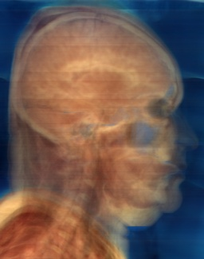
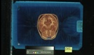
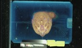
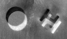
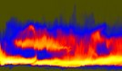
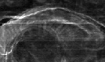
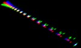
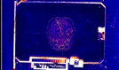

Visible Human Female Color Data Processing
- Slice Inspection
- Cropping
- Fiducial Inspection
- Brightness Problem
- Cube of Brain
- Gray Scale Strips
- Joint Histograms
- Image Differences
|
|
|
Visible Human Female Color Data Processing | ||
| teem | / | nrrd |
 |
- Preliminaries - Slice Inspection - Cropping - Fiducial Inspection - Brightness Problem - Cube of Brain - Gray Scale Strips - Joint Histograms - Image Differences |
The goal of these pages is three-fold:
The software used for this is primarily a single command-line tool, unu, which, like cvs, is really multiple commands combined into one executable. Along the way, two other pieces of teem software are employed, an image manipulation program similar to mogrify called "ilk", and a tool for measuring values and derivatives in scalar and vector volumes, called "vprobe". Xv will be used to view PPM images, and in order to make PNG images for the web, I also use the convert program from ImageMagick. Using command-line tools may seem a little old-fashioned, but it means that if you have the Visible Human data, you can recreate 100% of what I did simply by copying and pasting from these pages into a shell. Every single image (except for one Matlab plot) appearing on the following pages can be regenerated exactly with the commands preceeding it.
| 1) Preliminaries: Where to get the data, directory structure assumed by examples. | |||||||||||||||||||||||
|  | 2) Slice Inspection: How to look at
one slice with xv, and/or downsample it.
Demonstrates unu make, permute, save, resample. | ||||||||||||||||||||||
|  | 3) Cropping: Cropping the slices down the
the interesting bits (the head, and two of the fiducial markers),
and generating these for all head slices.
Demonstrates unu project, crop. 
|
| 4) Fiducial Inspection: Looking at exactly
how the fiducial markers moved from the top of the head to the bottom.
| Demonstrates unu quantize, join, swap, 2op. 
|
| 5) The inter-slice brightness problem:
Using various kind of projections and histograms to visualize how the
image brightness can change suddenly from slice to slice.
| Demonstrates unu reshape, histax, heq, flip, rmap, slice. 
|
| 6) Cube of Brain: A cubical region of
the dataset is select for closer scrutiny of the effects of the
brightness problem.
| Demonstrates vprobe.
|
| 7) Gray Scale Strips: Extracting the
gray scale strips from the Kodak card in some of the images.
| Demonstrates ilk. 
|
| 8) Joint Histograms: Precisely visualize
the brightness variations among small sets of images, and the
unfortunate fact that the gray scale strips don't capture all the
brightness variations inside the body.
| Demonstrates unu jhisto. 
|
| 9) Image differences: Per-pixel image
differences also depict the brightness changes, as well as shedding
a little light on why the gray scale strips failed.
| ???
|
| 10) Correcting the brightness problem. In progress.
| |